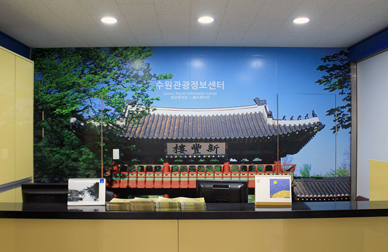
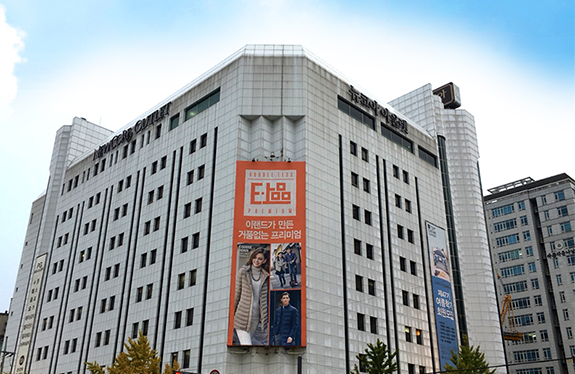
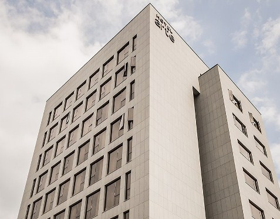

수원을 대표하는
수원화성과 화성행궁
자세히보기
수원의 다양한 볼거리와 맛집
수원 관광
자세히보기
-
.jpg)
- 수원화성 미디어아트쇼
- 미디어아트쇼 만천명월(萬川明月) : 정조의 꿈, 빛이 되다 ‘만천명월’은 정조대왕이 꿈꾸었던 세상을 다채로운 ‘빛’으로 표현한 초대형 미디어 아트 쇼로, 만개의 천(川)을 비추는 군주의 달은 세상을 공평하게 비추는 아름다운 빛이 되고 정조가 꿈꿨던 여민동락의 세상은 현대의 빛으로 다채롭게 변주된다.
.png)
- 정조대왕 능행차 공동재현
- 조선 후기를 문화적 황금기 시대로 이끌어 큰 부흥을 이루었던 22대 왕 정조. 가장 성대했던 왕의 행복한 행차를 재현하는 정조대왕 능행차 공동재현이 2022년 가을에 찾아옵니다.
.jpg)
- 수원화성문화제
- 2020~2021 문화관광축제, 조선 제22대 정조대왕의 효심과 부국강병의 원대한 꿈으로 축성된 세계문화유산 수원화성에서 펼쳐지는 대표적인 전통문화관광축제인 ‘수원화성문화제’가 오는 2022년 가을에 개최합니다.
.jpg)
- 세계유산축전
- 유네스코 세계유산 수원화성의 생생한 가치를 느낄 수 있는 (세계유산축전 수원화성)입니다. 수원화성 축성과 관련된 원행을묘정리의궤, 화성성역의궤, 정리의궤 등 역사적 기록을 기반으로 공연, 전시, 체험, 교육, 투어 등 다양한 콘텐츠를 선보입니다. 수원화성의 의미를 보다 깊이 이해하게 될 것입니다..
-
.png)
- 만석공원과 만석거(일왕저수지)
- 만석공원은 수원의 대표적인 시민공원으로 주변에 수원제2야외음악당과 수원시미술 전시관 등이 자리하고 있어 나들이를 겸해 문화생활의 즐거움도 누릴 수 있습니다. 수변경관이 아름다운 일왕저수지와 자연생태학습장, 산책로와 무지개빛 음악분수도 만석공원의 또 다른 매력입니다.
.png)
- 광교공원과 광교저수지
- 물과 숲을 테마로 조성된 광교공원은 넓은 잔디밭과 산책로, 음악분수, 생태하천으로 거듭난 수원천 등 시민들이 여가를 즐길 수 있도록 조성된 도심 속 녹지공원입니다. 언제 찾아도 계절의 정취를 만끽할 수 있는 광교저수지와 광교산이 이어져 있어 가족과 연인들의 나들이 장소로 각광받고 있습니다.
.png)
- 광교산 산림욕장
- 450ha의 자연 삼림에 산책 코스를 정비하고 각종 운동 기구를 설치해 등산과 휴양을 함께 즐길 수 있는 건강공원입니다. 상쾌한 숲길을 걸으며 쌓인 피로를 말끔히 씻어낼 수 있어 시민들에게 기분 좋은 휴식 처가 되고 있습니다.
.png)
- 광교호수공원
- 광교호수공원은 광교산과 원천저수지 및 신대저수지의 자연을 최대한 보존하며 아름다운 수변공간인 어반레비와 함께 6개의 테마를 가진 둠벙으로 어우러져 여러 가지 새로운 문화를 담은 국내 최대의 도심 속 호수공원입니다.
-
.png)
- 수원 순대타운
- 수원 지동시장 먹자골목 안에 30~40년 전통을 자랑하는 순대집들이 모여 있는 순대 타운이 있습니다. 신선하고 좋은 재료로 만들어 냄새 없이 깔끔한 맛과 푸짐한 양으로 수원지역은 물론, 외지에서도 일부러 찾아 올 만큼 유명세를 타고 있습니다. 부담 없고 편안한 분위기에서 쫄깃하고 담백한 다양한 순대요리를 맛볼 수 있습니다.
.png)
- 청년푸드트레일러
- 특색 있는 수원의 전통시장이 야간에도 활성화될 수 있도록 ‘청년창업 푸드트레일러 ZONE’이 있는 문화야시장으로 운영하여 다양한 먹거리를 제공하고 젊은 세대를 전통시장에 끌어들여 전통시장의 활기를 되찾아줄 프로젝트입니다. 또한, 취업난을 겪는 청년들에게 창업의 기회까지 제공하는 일석이조 사업입니다.
.png)
- 수원갈비
- 수원하면 단연 '갈비'가 으뜸! 전국을 넘어 세계에 그 맛을 알리고 있는 수원갈비는 다른 지방의 갈비보다 크고 푸짐하여 육질이 부드럽고 육즙이 풍부해 맛이 매우 좋습니다. 은은한 숯불에 구워 먹으면 입 안 가득 고기 고유의 향과 고소한 식감이 전해져 수원 양념갈비의 참맛을 제대로 즐길 수 있습니다.
.png)
- 수원 통닭거리
- 낮에는 수원화성 관광, 밤에는 수원 통닭거리 방문 수원에서만 유명한 거리가 아니라 전국적으로 유명한 거리가 있습니다. 팔달문 인근 '수원 통닭거리' 입니다. 진미통닭, 용성통닭, 남문통닭, 매향통닭, 장안통닭, 중앙치킨타운은 지금까지 수 십년 통닭의 맛을 지키며 수원 통닭거리의 명성을 만든 일등공신입니다.
보다 수월한 여행을 위한
추천관광코스
.png)
일정별코스
.png)
계절코스
.png)
화성코스
.png)
도보코스
.png)
자전거코스
.png)
시장코스
어디로 가야할 지 모를땐
여행 길라잡이
자세히보기

- 01
-
- 관광 안내소
- 수원을 즐겁게 즐기기 위한 첫 장소가 될 수원관광안내소의 위치를 소개합니다.

- 02
-
- 쇼핑
- 수원의 다양하고 화려한 쇼핑몰을 소개합니다.

- 03
-
- 숙박
- 고객님에게 편안한 휴식을 제공해 줄 수원의 관광호텔을 소개합니다.